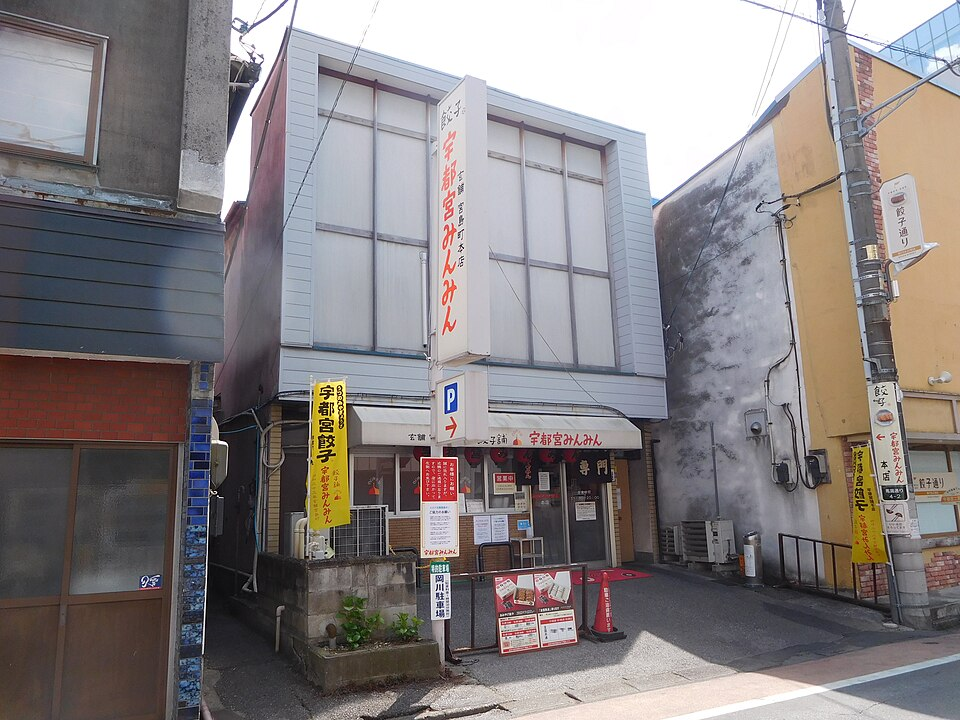

地図
点線は回る順番をつないだ線で、実際の道ではありません。ピンを押すとGoogleマップへのリンクが出ます。大谷資料館は市街から西へ約7km離れています。
当日の流れ
- 7:30西小山 出発東急目黒線で目黒 → 山手線で東京 → 東北新幹線（やまびこ）
- 9:20① 宇都宮駅 着東京〜宇都宮は新幹線で約50分
- 9:30
- 10:20
- 11:30
- 12:30バスで大谷へ「馬場町」付近から関東自動車「大谷・立岩」行き →「資料館入口」下車、徒歩約5分
- 13:05
- 14:30バスで市街へ戻る市街まで約20〜30分
- 15:10
- 16:00⑦ 餃子③ 宇都宮みんみん（本店 または 宮みらい店）本店は餃子通り、宮みらい店は駅東口のウツノミヤテラス2階。11:00〜20:30（L.O.20:00） 未確認

みんみん本店。写真: Miyuki Meinaka / CC BY-SA 4.0 - 17:00〜夕食（気分で）・帰宅多くのお店は20時前後に閉まるので、18:30ごろまでに店と帰りの新幹線を決める
行けなかったときの代わり
定休日・売り切れ・行列が長すぎるときは、上から順に回ります。評価はGoogleマップの値（10/10時点）です。
餃子① 正嗣の代わり
餃子通り周辺・午前- 1宇都宮餃子専門店 悟空
正嗣と同じ餃子通り。歩いてすぐで流れが崩れない。評価4.2（1,182件）。ジャンボ餃子が名物
- 2宇都宮みんみん 本店
これも餃子通り。11:00開店で午前の候補になる。③を宮みらい店にすれば重複しない
餃子② 香蘭の代わり
大谷から戻った直後- 1宇都宮餃子専門店 悟空
①で使っていなければ。餃子通りで、みんみん本店ともまとめて回れる
- 2来らっせ 本店で幸楽の餃子リスト外
幸楽の店は市街の北西（宝木町）で、餃子通りから離れる。馬場町の来らっせ常設コーナーに幸楽が入っている掲載あり（栃ナビ 2024年）。大谷からのバスを馬場町で降りればそのまま行ける
- 3宇都宮餃子 幸楽（宝木町の店）
リストで最も評価が高い（4.3・1,704件）。宝木町2丁目864-4。タクシーが確実（バスは未確認）。営業時間 未確認
- 4餃天堂 シンボルロード店
評価は3.8と控えめ。営業時間が長め（10:30〜21:30の掲載あり）で、時間が押したときの受け皿
餃子③ みんみんの代わり
夕方・駅に近い順- 1みんみんの別店舗に切り替え
本店が混んでいたら宮みらい店（駅東口）へ。逆も可。宮みらい店は番号を伝えて外で待てる仕組みあり（口コミ）
- 2宇都宮餃子専門店 悟空
①②で使っていなければ。餃子通りでみんみん本店のすぐ近く
- 3来らっせ 本店リスト外
土日祝は21:00まで・年中無休の掲載あり。日替わりで30店以上の餃子を食べ比べできる。最後の砦
夕食の候補
「気分で」用- 1レストラン ペニーレイン 宇都宮店
駅東口。10:30〜22:00の掲載があり、遅くまで開いている。ハンバーグとパン食べ放題が人気。掲載は2022年と古め
- 2宇都宮みんみん 宮みらい店
駅直結で帰りの新幹線に乗りやすい。もう1回餃子にしたいとき
- 3来らっせ 本店リスト外
食べ比べで締めたいとき。駅まではバスかタクシー
Googleマップのリスト（15か所）
元のリスト「宇都宮」の全スポットです。名前を押すと上の地図がその場所に移動します。
前日にやること
チェックは見ている端末のブラウザにだけ保存されます。
確認状況と出典
| 項目 | 内容 | 出典・基準日 | 確かさ |
|---|---|---|---|
| 大谷資料館 | 4〜11月 9:00〜17:00（最終入館16:30）・無休。臨時休館は電話で確認 | 公式サイト（10/10確認） | 確認済み |
| 大谷資料館 入館料 | 大人800円 | 宇都宮市チラシ（2023年4月） | 未確認 |
| 大谷行きバス | 駅から約30分、資料館入口から徒歩約5分 | 栃木県／時刻は2023年版 | 時刻は未確認 |
| 新幹線 | 東京〜宇都宮 約50分 | トレたび（2023年10月） | 目安 |
| 正嗣 | 11:30〜売り切れ次第・火水休 | ハモニ（SNS転載） | 未確認 |
| 香蘭 | 11:30〜20:00・火休（祝日は営業） | NAVITIME（日付不明） | 未確認 |
| みんみん 宮みらい店 | 11:00〜20:30（L.O.20:00）・不定休 | 栃ナビ（2025年9月） | 未確認 |
| みんみん 本店 | 11:00〜20:30（L.O.20:00）・不定休・現金のみ | 栃ナビ（2025年9月） | 未確認 |
| ペニーレイン 宿郷店 | 8:00〜19:00・無休（朝7時開店とする記事もあり） | Retty | 未確認 |
| レストラン ペニーレイン | 10:30〜22:00・無休 | 栃ナビ（2022年10月） | 未確認 |
| 来らっせ 本店 | 土日祝 11:00〜21:00・年中無休。常設に幸楽あり | 栃ナビ（2024年2月）・NAVITIME | 未確認 |
| 地図の位置 | 各スポットの緯度・経度 | Googleマップの検索結果（10/10取得） | 目安 |